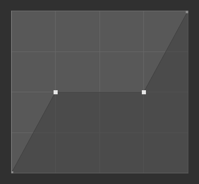
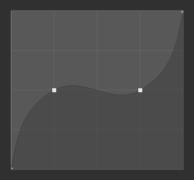
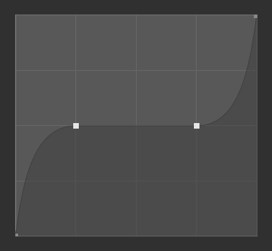
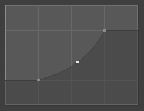
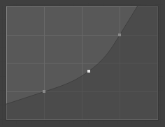

Curve Widget¶
Curve widget.
The purpose of the Curve Widget is to allow the user to modify an input (such as an image) in an intuitive manner by smoothly adjusting the values up and down using the curve.
The input values are mapped to the X axis of the graph, and the output values are mapped to the Y axis.
Control Points¶
Like all curves in Blender, the curve of the Curve Widget is controlled using control points.
By default, there are two control points: one at (0.0, 0.0) and one at (1.0, 1.0), meaning the input is mapped directly to the output (unchanged).
- Move
- Simply click and drag it around.
- Add
- Click anywhere on the curve where there is not already a control point.
- Remove
- Select it and click the
Xbutton at the top right.
Controls¶
Above the curve graph is a row of controls. These are:
- Zoom In (plus magnifying glass icon)
- Zoom into the center of the graph to show more details and provide more accurate control. To navigate around the curve while zoomed in, click and drag in an empty part of the graph.
- Zoom Out (minus magnifying glass icon)
- Zoom out of the graph to show fewer details and view the graph as a whole. You cannot zoom out further than the clipping region (see Clipping below).
- Specials
v A Specials menu with tools to operate on control points or to set properties.
- Reset View
- Resets the view of the curve.
- Handle Options
Controls how the control points affect the curve shape.
- Vector Handle
- Vector handles create straight lines; breaking the tangent at the curve handle, making it an angle.
- Auto Handle
- Automatic handles that create smooth curves.
- Auto Clamped Handle
- Automatic handles that create smooth curves, which prevents overshoot.
Vector Handles.
Auto Handles.
Auto Clamped Handles.
- Extend Options
Controls how the curve is extended before the first control point and after the last control point.
- Extend Horizontal
- Causes the curve to stay horizontal before the first point and after the last point.
- Extend Extrapolated
- Causes the curve to extrapolate before the first point and after the last point, based on the shape of the curve.
Extend Horizontal.
Extend Extrapolated.
- Reset Curve
- Resets the curve in default (removes all points added to the curve).
- Clipping (dot icon)
- Use Clipping
- Forces curve points to stay between specified values.
- Min X/Y and Max X/Y
- Set the minimum and maximum bounds of the curve points.
- Delete
X - Remove the selected control point. The first and last points cannot be deleted.
- X, Y
- The coordinates of the selected control point.
- Copy/Paste Ctrl-C, Ctrl-V
- The whole curve can be copied from one Curve Widget to another by hovering over the curve graph and pressing Ctrl-C, Ctrl-V.